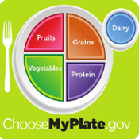

Portion Control
Portion Control will help you create and balance a healthy diet. Therefore, it is very important to understand how to balance your portions. One of the best ways to practice good portion control is following the MyPlate food guide from the U.S. Department of Agriculture (USDA). For example:
- fill half of your plate with vegetables and fruits.
- make at least half the grains whole, like oatmeal and brown rice.
- try fat-free or low-fat (1%) milk or water instead of sugary drinks.
- when you are buying pre-packaged foods, choose the ones that are low in sodium.
References:
kidshealth.org
choosemyplate.gov

Image Source:creativecommons.org